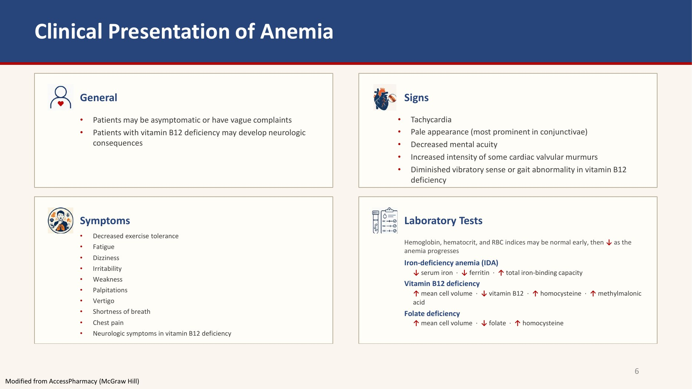

Section 01 · Slides 6–7
Clinical Presentation and the Labs That Distinguish Anemias

Signs
- Tachycardia
- Pale appearance — most prominent in the conjunctivae
- Decreased mental acuity
- Increased intensity of some cardiac valvular murmurs
- Diminished vibratory sense or gait abnormality in vitamin B12 deficiency
Symptoms
- Decreased exercise tolerance · fatigue · dizziness · irritability · weakness
- Palpitations · vertigo · shortness of breath · chest pain
- Neurologic symptoms in vitamin B12 deficiency
Patients may be asymptomatic or have vague complaints — which is why the labs, not the history, make the diagnosis.
Vitamin B12 deficiency produces diminished vibratory sense, gait abnormality and neurologic consequences. Iron and folate deficiency do not. This single asymmetry drives the most important safety rule in the lecture — see LO 7.
Laboratory tests
Haemoglobin, haematocrit and red blood cell indices may be normal early, then fall as the anemia progresses. The distinguishing panels are:
![Three-card slide distinguishing the nutritional anemias: iron deficiency as microcytic hypochromic with MCV under 80 and MCHC under 30 percent, low serum iron with high total iron-binding capacity giving transferrin saturation under 10 percent and ferritin under 20; folic acid deficiency as macrocytic normochromic with MCV over 100, low serum folic acid, high homocysteine and normal methylmalonic acid; and vitamin B12 deficiency with the same red cell picture plus low cobalamin, high homocysteine and high serum and urine methylmalonic acid](img/anemia/distinguishing-nutritional-anemias.jpg)
| ⬢ Iron | ❀ Folic acid | 💊 Vitamin B12 | |
|---|---|---|---|
| Type of anemia | Microcytic, hypochromic MCV < 80 fL and MCHC < 30% | Macrocytic, normochromic MCV > 100 fL, normal or elevated MCHC | Same as folic acid deficiency |
| Iron studies | ↓ Serum iron < 30 mcg/dL with ↑ total iron-binding capacity, giving a % transferrin saturation (SI/TIBC) < 10% ↓ Serum ferritin < 20 mcg/L | — | — |
| Vitamin level | — | ↓ Serum folic acid < 4 ng/mL | ↓ Serum cobalamin < 100 pmol/L |
| Homocysteine | — | ↑ > 13 µmol/L | ↑ > 13 µmol/L |
| Methylmalonic acid (MMA) | — | NORMAL | ↑ serum > 0.4 µmol/L and urine > 3.6 µmol/mol creatinine |
Both vitamin B12 and folate deficiency raise homocysteine, so homocysteine cannot tell them apart. Only vitamin B12 deficiency raises methylmalonic acid — in folate deficiency it is normal. If a question gives you a macrocytic anemia and asks how to distinguish, the answer is methylmalonic acid.
Ferritin below 20 mcg/L is diagnostic of iron deficiency, but ferritin is an acute-phase reactant — inflammation, infection and malignancy can push it into the normal range in a genuinely iron-deficient patient. In that setting the transferrin saturation below 10% is the more reliable marker. And note the direction of the iron studies: iron down, total iron-binding capacity UP — the body makes more transferrin when it is starved of iron, so the carriers are more numerous but less full.
Q: A patient has an MCV of 112 fL, low serum cobalamin, raised homocysteine and a normal methylmalonic acid. Which deficiency is it?
The normal methylmalonic acid points to folate deficiency, not vitamin B12 — a genuine B12 deficiency would show raised serum (> 0.4 µmol/L) and urine (> 3.6 µmol/mol creatinine) methylmalonic acid. Raised homocysteine occurs in both and does not discriminate. A low cobalamin with a normal methylmalonic acid is most consistent with a borderline or falsely low B12 assay in a patient whose real problem is folate; the methylmalonic acid is the more specific functional test and should be trusted here.
Q: Which single physical finding in the anemia examination points specifically toward vitamin B12 rather than iron or folate deficiency?
Diminished vibratory sense or gait abnormality. Vitamin B12 deficiency produces neurologic consequences — subacute combined degeneration of the dorsal columns and corticospinal tracts — which neither iron nor folate deficiency does. The other listed signs (tachycardia, conjunctival pallor, decreased mental acuity, increased intensity of some valvular murmurs) are non-specific features of anemia of any cause.
![Two-column slide on adverse effects of iron therapy: oral formulations cause extremely common gastrointestinal side effects, metallic taste, nausea and vomiting, flatulence, constipation and epigastric distress, plus itching and black green or tarry stools that stain clothing or cause anxiety about bleeding, resulting in low compliance; intravenous formulations cause allergic reactions including potentially life-threatening anaphylaxis though serious reactions are exceedingly rare, plus hypotension, dizziness, dyspnea, headaches, lower back pain, arthralgia, syncope and arthritis, some minimised by decreasing dose or infusion rate](img/anemia/iron-therapy-adverse-effects.jpg)
![Slide covering acute iron toxicity seen almost exclusively in young children who accidentally ingest iron tablets with severe gastrointestinal distress progressing to necrotizing gastroenteritis, haematemesis, abdominal pain, bloody diarrhoea, dyspnoea, lethargy, shock, metabolic acidosis, coma and death with peak serum iron over 500 mcg per dL; urgent treatment with intestinal decontamination, gastric lavage and iron-chelating compounds; and iron overload reversal agents deferoxamine intravenous, deferasirox oral and deferiprone oral, with a footnote distinguishing dimercaprol, N-acetylcysteine, succimer, penicillamine and activated charcoal](img/anemia/iron-toxicity-and-overload-reversal.jpg)
![Decision tree for iron deficiency anemia treatment: first asking whether the anemia is severe or life-threatening with haemoglobin under 7 to 8 g per dL or symptoms of haemodynamic compromise or cardiac ischaemia, where yes leads to red blood cell transfusion; if no, asking whether lack of response to intolerance of or inability to adhere to oral iron, surgery planned within two months, inflammatory bowel disease, gastrectomy or bariatric surgery, or dialysis-dependent kidney disease are present, where yes leads to IV iron preferred and no leads to oral iron preferred](img/anemia/ida-treatment-algorithm.jpg)
![Two-column slide on prevention and treatment of folic acid deficiency anemia: prevention covers individuals at risk such as malnutrition and chronic alcohol use with 1 mg daily supplementation, a recommended daily allowance of 400 micrograms for adults, 600 micrograms daily in pregnancy to prevent anencephaly and spina bifida, and 4 mg daily through the first trimester with prior or family history of neural tube defects; treatment covers oral folic acid 1 to 5 mg daily, dietary folate encouragement, and parenteral or intravenous folic acid when oral is not possible](img/anemia/folic-acid-prevention-treatment.jpg)


![Slide on vadadustat listing its pharmacologic class as an oral hypoxia-inducible factor prolyl hydroxylase inhibitor also called a HIF stabiliser, clinical use in anemia due to dialysis-dependent chronic kidney disease of at least three months, mechanism reversibly inhibiting PH1 PH2 and PH3 to stimulate transcription of the erythropoietin gene in kidneys and liver, adverse effects including GI erosions bleeding hepatotoxicity hypertension seizures and malignancy, contraindications of hypersensitivity and uncontrolled hypertension, a US boxed warning for death myocardial infarction stroke venous thromboembolism and vascular access thrombosis, and unknown pregnancy usage](img/anemia/vadadustat-hif-ph-inhibitor.jpg)